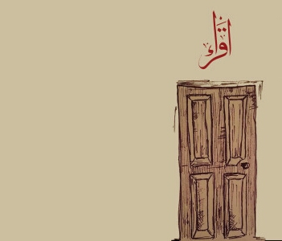

Sometime after genesis...
You stand before the door, ominous and alluring. Inscribed just above, "read" in fluid Arabic script.
Beyond the door lies a realm replete, a juggernaut. You enter.
Beneath you stretches a large circular platform suspended within a great black expanse.
Along the edge a marble railing knee high inlaid with gold leaf and incomprehensible writing encircles the platform.
Subtly etched into the floor is a lowercase Greek lambda (λ).
A single soft and angelic glow shines from the unreachable heights tingeing everything with embracing warmth.
Dust particles like autumn leaves dance with the light and swirl gently through the air.
Rich purple hues mixed with deep ocean blues give the place a calming stillness.
The mere sight of it all evokes a sweet phantom scent of arcane tomes.
This is home.
Just over the edge; shelves towering like ancient obelisks,
shelves wrapping around in concentric rings,
shelves reaching outward into the abyss as far as the eye can see, ascending upward towards eternity and downward just the same.
Within this space lies a noble attempt in futility.
The colossal infinity that stretches before and after, the places, names, forms, and faces that have come to be and pass.
Monuments erected and crumbled in the sand, written works and novel ideas.
No human structure could contain the transformations of the echoes through time.
And yet here we are.
Off to the side of the platform, hovering patiently and gracefully, a spectral being,
as ephemeral as a flame, bioluminescent and cool to the touch.
Composed of the world's glyphs - Greek, Arabic, Cyrillic, Japanese, etc.
- morphing into one another and perpetually fading out of existence.
It militantly scours the vast expanse, sifting, indexing, arranging, retrieving, awaiting any order.
It is the gatekeeper and the guardian, a custodian of humanity's collective intellect.
On the opposite side rests a humble desk. Pen, paper, a keyboard, and an assortment of disheveled books; the tools of a scholar.
However, these are no ordinary books.
Inside, the pages have this translucent quality, as if they were made of some sort of alien plasma or liquid crystal.
The pages smoothly glide over one another with the flick of a wrist.
Their texture is like that of water, which is to say they have no distinct texture at all.
I'm looking for Richard Feynman's lectures on physics.
In a whirling flurry the shelves collapse to a swarm of pixelated dust then vanish, momentarily leaving nothing but the abysmal darkness,
only for the atoms to then recoalesce into a new form.
Floor 12,567,443 - physics.
True to its nature the bibliospecter ventures out into the ocean of books and returns with precisely what is asked for,
"The Feynman Lectures on Physics."
You open the book.
A 3 dimensional hologram emanates from one of the pages - Feynman in the digital flesh,
standing before the chalk board lecturing on the deepest natures of reality;
quantum electrodynamics, entropy, mechanics, relativity and Newton's laws.
On the adjacent page rest a myriad of equations and formulae.
"I need to review trigonometric identities."
This time the platform rises one floor, the massive shelves shifting with the internal logic of a monolithic Rubik's cube.
Floors; floors upon floors upon floors abound with the collected scrawl, moans, sighs, and all other forms of artistic, cathartic, informational riff raff.
Floor 1,659,453,235,778 is dedicated solely to works on unrequited love; poetry, novels, audio recordings, paintings, all of it.
Floor 9,145,986? a collection of memoirs written prior to 1802.
Floor 12,567,444 nothing but mathematics.
Floor 73,234,758,345 - archived Facebook pages of the deceased.
There is no hope in this place.
The world's knowledge accessible at any instant, colossal and overwhelming, entirely worthless.
It is not the information that carries intrinsic value, it is the seeker who imbues the noise with meaning.
You start to think, "it's ironic how civilization is made of sand, like one elaborate sand castle.
Our buildings, our roads, our glass, our computers."
Silicon dioxide to be exact.
In a romantic way it serves the truism "all shall crumble," the waves of time obliterating everything.
Like an early morning dream recollection, the voice of Archimedes rings - "There are some, king Gelon, who think that the number of the sand is infinite"
Were we to stop here, we would not be at fault in thinking that civilization may indeed carry on indefinitely into the future, continually building on itself.
But, Archimedes continues; "there are some who, without regarding it as infinite, yet think that no number has been named which is great enough..."
and with that, the door closes behind you.
You take off your virtual reality HMD, shut down your computer, and retire to the comforts of your own bed.
Projectlambda.org